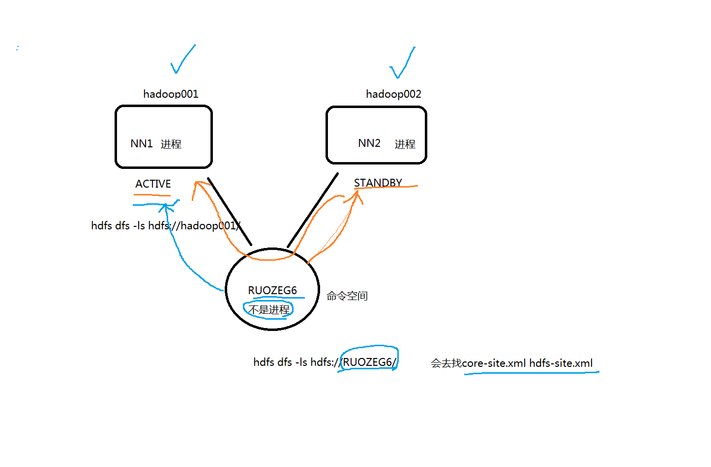
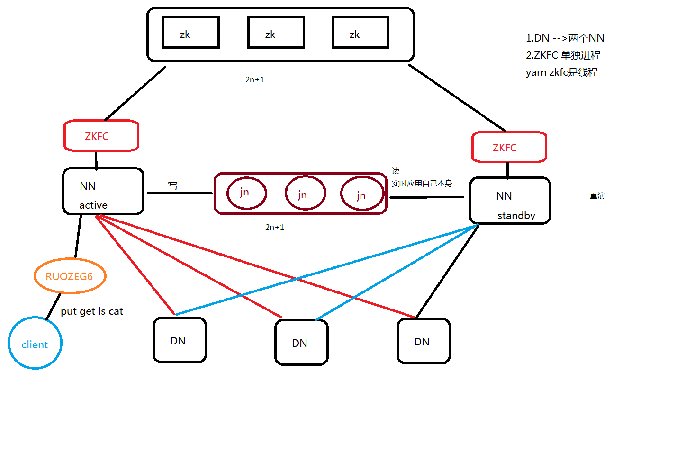
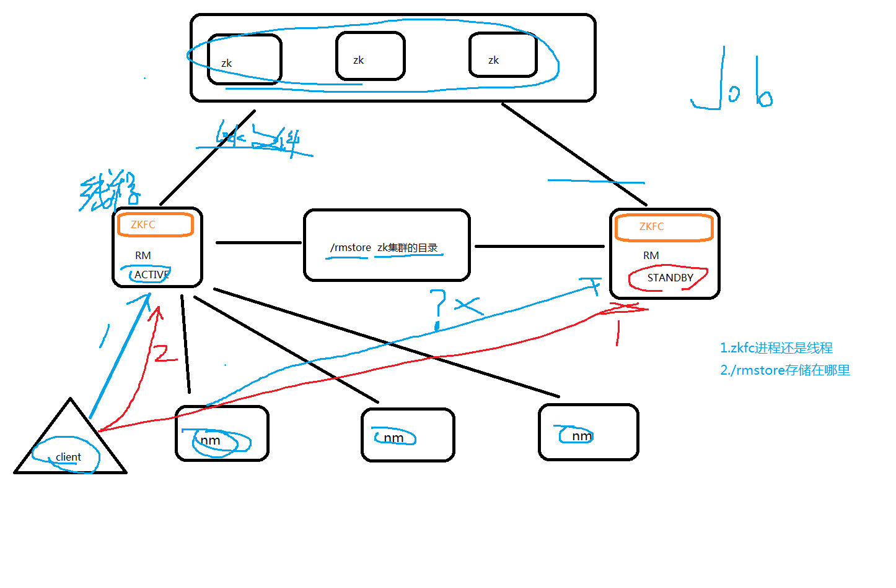

HDFS HA
1、为什么要用集群
学习过程中我们只需要单点就够了
我们在企业中大数据几乎所有组建都是主从架构 master-slave
比如hdfs读写请求都是先NN节点；
但是:hbase 读写请求不是经过老大master
企业里面，伪分布式 每一个角色都是1个进程
HDFS:
NN 老大 master 【假如master挂了，所有与nn交互的任务都会中断】
SNN 1h checkpoint secondary【只能恢复checkpoint内的数据；如果一个小时一个checkpoint，那么就会有丢掉一小时的数据的风险】
DN
出现NN节点挂了，就不能提供对外服务
企业里面一般都是两个NN节点(实时的,任何时刻只有1台active对外，另外一台是standby 实时备份【随时准备着】，随时准备着从standby切换active状态，对外服务)
NN1 active 11:00挂了 hdfs://ip1:9000/ 代码 shell脚本
NN2 standby active hdfs://ip2:9000/
我们在项目中不可能关注代码和脚本来切换ip1和ip2，是在命名空间中来做的，这对我们来说是无感知的
无感知的：两个NN可以来回切换，我们不必关注谁是active谁是standby
命名空间： nameservice1 CDH里默认的nameservice1
生产上面叫做dw【数仓】
命名空间图
在执行操作【命令】的时候会从配置参数中随机找到一个NN来判断这个NN是否为active，是则继续执行命令，否则切换为另一个NN。

NN: fsimage editlog 读写请求记录
HA进程: 3台机器
hadoop001:ZK NN ZKFC JN DN
hadoop002:ZK NN ZKFC JN DN
hadoop003:ZK JN DN
journalNode: 主要考虑HDFS请求量 及数据量来部署具体多少台【主要记录editlog】
如果小文件BT级别的数据那么JN就要多一点；如果hdfs很悠闲那就少一点可以跟ZK保持一致
zookeeper.apache.org
ZK集群 2n+1 奇数 选举 谁做active standby
生产中的ZK部署：
20台节点: 5台
20~100台节点: 7/9/11台
100台节点: 11台
但是: 不是说zk节点越多越好，因为如果在切换某个组件active的时候，选举的时候投票数越多，时间越长，对服务造成影响
对越几百台节点的集群，zk部署的机器就它一个进程，防止其他进程抢占zk进程资源，造成选举延迟或失败。
hdfs-HA架构图

—————–图解——————–
HA是为了解决单点问题
通过JN集群共享状态
通过ZKFC选举active
监控NN状态，自动备援。
DN: 同时向NN1 NN2发送心跳和块报告。
【dfs.heartbeat.interval：DN的心跳检测时间间隔，默认3秒】hdfs-site.xml
【dfs.blockreport.intervalMsec：控制DN定期将当前该结点上所有的BLOCK信息报告给NN的时间间隔，默认21600000ms = 6小时】hdfs-site.xml
ACTIVE NN: 操作记录写到自己的editlog
同时将editlog写入JN集群
接收DN的心跳和块报告
STANDBY NN: 同时接收JN集群的日志，显示读取执行log操作(重演)，
使得自己的元数据和active nn节点保持一致。
接收DN的心跳和块报告
JounalNode: 用于active standby nn节点的同步数据【standby会重演active的状态（操作记录editlog ）】
一般部署2n+1【官方建议】至少写n/2+1成功才算成功
2n+1台: 【默认是每台运行的节点都会写入】
7台 写: n/2+1 写4台算成功 允许3台宕机
3台 写: n/2+1 写2台算成功 允许1台宕机
standby NN读取的时候是随机选择写入成功一台来读取active NN的状态进行重演
ZKFC: 单独的进程
监控NN监控健康状态
向zk集群定期发送心跳，使得自己可以被选举；
当自己被zk选举为active的时候，zkfc进程通过RPC协议调用使NN节点的状态变为active，
对外提供实时服务，是无感知的。
ZKFC: zookeeperfailovercontrol【这里的zkfc是进程】；yarn里的zkfc是一个线程
进程: ps -ef
线程是由1个以上的线程组成
YARN HA
YARN HA
hadoop001：zk rm(zkfc) nm
hadoop002：zk rm(zkfc) nm
hadoop003：zk nm

—————-图解————-
ZKFC: 线程
只作为RM进程的一个线程而非独立的进程存在
为什么和hdfs的ZKFC不同呢？因为mr只是作业；挂了重新启动构建资源就可以；而HDFS会丢数据。所以zkfc在yarn里是线程，在hdfs是独立进程。
图里的nm只和active的RM通信而不会和standby的rm通信；这里的原因也是作业挂了重新启动构建资源即可而不会像hdfs里的DN时刻和两个NN通信。
*RMStateStore: *存储在zk的/rmstore目录下。【/rmstore为默认值可通过yran.resourcemanager.zk-state-store.parent-path配置】
1.activeRM会向这个目录写APP信息
2.当activeRM挂了，另外一个standby RM通过ZKFC选举成功为active，会从/rmstore读取相应的作业信息。
重新构建作业的内存信息，启动内部的服务，开始接收NM的心跳，构建集群的资源信息，并且接收客户端的作业提交请求。
RM:
1.启动时候会向ZK的/rmstore目录写lock文件，写成功就为active，否则standby.
rm节点zkfc会一直监控这个lock文件是否存在，假如不存在，写一个lock文件，宣布自己是active，否则为standby.
2.接收client的请求，接收和监控NM的资源状况的汇报，负载资源的分配和调度。
3.启动和监控APPMASTER on NM节点的container。
applicationsmanager 运行在RM节点
applicationmaster 运行在NM节点 container容器里 作业的主程序
NM:
节点资源的管理 启动容器运行task计算 上报资源